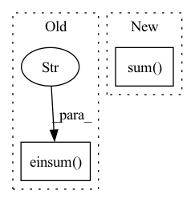

Pattern ID :1613
Before Change
for n in range(1, self.impulse_response_length):
s = n - self.cep_order
h[..., n] = (
torch.einsum(
"...d,...d->..." ,
h[..., max(0, s) : n].clone(),
c1[..., max(0, -s) :],
)
/ n
)
return h
After Change
h[..., 0] = torch.exp(c0)
for n in range(1, self.impulse_response_length):
s = n - self.cep_order
h[..., n] = (h[..., max(0, s) : n].clone() * c1[..., max(0, -s) :]).sum(
-1
) / n
return h
In pattern: SUPERPATTERN
Frequency: 4
Non-data size: 2
Instances Fragment ID: 6541891
Project Name: sp-nitech/diffsptk
Commit Name: 29f817e959598e410ea695820338b357fa21fff2
Time: 2022-04-08
Author: takenori.yoshimura24@gmail.com
File Name: diffsptk/core/c2mpir.py
M Class Name: CepstrumToImpulseResponse
N Class Name: CepstrumToImpulseResponse
M Method Name: forward(2)
N Method Name: forward(2)
M Parent Class: nn.Module
N Parent Class: nn.Module
M File Name: diffsptk/core/c2mpir.py
N File Name: diffsptk/core/c2mpir.py
M Start Line: 69
M End Line: 83
N Start Line: 69
N End Line: 79
Before Change
// c: (batch_size, num_capsules, num_route_nodes)
// u_hat: (batch_size, num_capsules, num_route_nodes, out_channels)
// s: (batch_size, num_capsules, out_channels)
s = torch.einsum("ijk, ijkl -> ijl" , c, u_hat_temp)
v = squash(s)
// Update b
// u_hat: (batch_size, num_capsules, num_route_nodes, out_channels)After Change
// (batch_size, num_caps, in_caps, 1) * (batch_size, in_caps, num_caps, dim_caps) ->
// (batch_size, num_caps, in_caps, dim_caps) sum across in_caps ->
// (batch_size, num_caps, dim_caps)
s = (c * temp_u_hat).sum(dim=2)
// apply "squashing" non-linearity along dim_caps
v = squash(s)
// dot product agreement between the current output vj and the prediction uj|i
// (batch_size, num_caps, in_caps, dim_caps) @ (batch_size, num_caps, dim_caps, 1) Fragment ID: 6541890
Project Name: riroaki/capsnet
Commit Name: e62f83faad1731befd8a1e434aaf902e2140aecb
Time: 2020-03-08
Author: aki@akideMacBook-Pro.local
File Name: capsnet.py
M Class Name: DigitCaps
N Class Name: DigitCaps
M Method Name: forward(2)
N Method Name: forward(2)
M Parent Class: nn.Module
N Parent Class: nn.Module
M File Name: capsnet.py
N File Name: capsnet.py
M Start Line: 50
M End Line: 79
N Start Line: 59
N End Line: 93
Before Change
d = torch.sum(z_flattened.pow(2), dim=1, keepdim=True) + \
torch.sum(self.embedding.weight.pow(2), dim=1) - 2 * \
torch.einsum("bd,dn->bn" , z_flattened, self.embedding.weight.permute(1,0)) // "n d -> d n"
encoding_indices = torch.argmin(d, dim=1)
z_q = self.embedding(encoding_indices).view(z.shape)After Change
self.embedding.embed_avg.data.mul_(self.decay).add_(embed_sum, alpha=1 - self.decay)
//cluster size Laplace smoothing
n = self.embedding.cluster_size.sum()
cluster_size = (
(self.embedding.cluster_size + self.eps) / (n + self.num_tokens * self.eps) * n
)
//normalize embedding average with smoothed cluster size Fragment ID: 6541889
Project Name: tgisaturday/dalle-lightning
Commit Name: e387b61c8c640b56c7cbd241d8ec60ab1f022611
Time: 2021-08-12
Author: jamesk1228@gmail.com
File Name: pl_dalle/modules/vqvae/quantize.py
M Class Name: EMAVectorQuantizer
N Class Name: EMAVectorQuantizer
M Method Name: forward(2)
N Method Name: forward(2)
M Parent Class: nn.Module
N Parent Class: nn.Module
M File Name: pl_dalle/modules/vqvae/quantize.py
N File Name: pl_dalle/modules/vqvae/quantize.py
M Start Line: 85
M End Line: 118
N Start Line: 184
N End Line: 215
Before Change
x = x.view(new_shape)
// The better way, but not supported by torchscript
// x = x.unflatten(-1, (self.groups, self.ws)) // [..., G, I/G]
x = torch.einsum("...gi,...gih->...gh" , x, self.weight) // [..., G, H/G]
x = x.flatten(2, 3) // [B, T, H]
return x
After Change
// This is also not supported by tract:
// x = torch.einsum("btgi,gih->btgh", x, self.weight) // [..., G, H/G]
// Thus, lets to some manual reshaping and multiplication:
x = x.unsqueeze(-1).mul(self.weight.unsqueeze(0).unsqueeze(0)).sum( -2)
x = x.flatten(2, 3) // [B, T, H]
return x
Fragment ID: 6541885
Project Name: rikorose/deepfilternet
Commit Name: e52e8a423d869b5882f9b86aaa8a8d7e8a07edf2
Time: 2022-10-20
Author: Rikorose@users.noreply.github.com
File Name: DeepFilterNet/df/modules.py
M Class Name: GroupedLinearEinsum
N Class Name: GroupedLinearEinsum
M Method Name: forward(2)
N Method Name: forward(2)
M Parent Class: nn.Module
N Parent Class: nn.Module
M File Name: DeepFilterNet/df/modules.py
N File Name: DeepFilterNet/df/modules.py
M Start Line: 727
M End Line: 730
N Start Line: 727
N End Line: 733